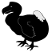

Je suis abonné à la photo du jour sur Wikimedia Commons. Cela me permet d’avoir un peu plus de joli tous les jours dans ma boite-aux-lettres. Chaque matin, je reçois une jolie photo (ou parfois un dessin) qui, quand je suis curieux, m’en montre et m’en apprend plus sur le monde. Vous aussi, abonnez-vous c’est gratuit et sans engagement.
Quelle n’a pas été ma surprise en ce 21 avril de voir que la photo du jour venait d’un petit coin de France dont je parle ici. Une jolie photo de coucher de soleil ; ça change de la météo d’il y a 20 ans après un célèbre coup de tonnerre. La légende indique que c’est un coucher de Soleil à Saint Gilles-les-Bains (la Réunion), en octobre la digue à l’entrée du port vue de la plage des Roches Noires. La digue est là pour protéger les bateaux de plaisance du petit port de Saint-Gilles mais elle est aussi un lieu de passage. On y voit les silhouettes des pêcheurs du soir jetant leurs lignes sur cette digue et une forme de voile en tête de jetée qui n’arrive pas à vraiment cacher le soleil vespéral. Le ciel orange donne son cachet au cliché éblouissant.
{% Image page, "Coucher-de-Soleil-SaintGilles.jpeg", "Coucher de soleil orange avec jetée et environ 10 silhouettes noires de pêcheurs qui se découpent sur la mer." %}
Coucher de Soleil à Saint Gilles-les-Bains (la Réunion), en octobre 2007 : la digue à l’entrée du port vue de la plage des Roches Noires. (photo: Maxime L.)
Maxime L. a pris cette photo un soir de printemps au bord de la plage lors de son séjour à la Réunion. Il a appuyé au bon moment sur le bouton de son petit PowerShot de poche. Nous sommes le 11 octobre 2007, je présente le parc national de la Réunion et je ne sais pas que cette photo existe. Je crois que Maxime ne sait pas non plus qu’il vient de créer le sujet de mon article pour cinq ans plus tard…
De retour chez lui, Maxime trouve sa photo jolie et veut la partager. Il ouvre un compte sur Wikipedia Commons le 6 novembre pour y envoyer sa photo. Il se dit qu’elle est vraiment bien et trois jours plus tard soumet donc à l’appréciation des autres pour qu’elle devienne Feature picture, c’est-à-dire image remarquable l’un des deux labels qu’une image peut obtenir sur Wikimedia Commons. Ce label est distribué après un vote des éditeurs du site, c’est-à-dire les autres personnes qui y partagent leurs photos dans le monde entier. Le vote est public et chaque votant doit expliquer son choix. Quelques jours plus tard, le vote est clos par un éditeur volontaire (un Autrichien vivant en Finlande) et la photo est déclarée image remarquable le 20 novembre 2007, la page affiche désormais la petite étoile convoitée par Maxime. Seulement il aimerait bien que cette photo devienne « image du jour » et ne sait pas comment faire.
En janvier suivant, Maxime propose sa photo au concours de photo de l’année. Il collecte 53 votes lors du premier tour entre le 10 et le 17 janvier. C’est un bon score mais ce n’est pas assez, les finalistes ont collecté plus du double. Vous pouvez admirer la galerie des finalistes de ce concours de photos de 2007 dont le vainqueur, une photo de la tour Broadway à Cotswolds, deviendra l’emblème des prochains concours sur Wikimedia Commons.
L’histoire aurait pu s’arrêter là. Maxime, alias Cblm, n’a pas continué a promouvoir sa photo de Saint-Gilles, la seule qu’il ait téléversée sur Wikimedia Commons. Pourtant la photo avec sa licence libre continue de se diffuser sur Wikipédia à la page de Saint-Paul, commune où a été prise la photo, par exemple mais aussi sur le portail des Mascareignes et surement d’autres pages que je n’ai pas vues. Il faut aussi rappeler que toute image remarquable peut être choisie par n’importe qui pour devenir image du jour. C’est ce qui est arrivé 15 ans après. L’un des nombreux administrateurs de Wikimedia Commons, le Russe Well-Informed Optimist a décidé, un après-midi de février 2022, de rajouter la photo de Maxime pour qu’elle soit photo du 21 avril 2022. Comme quoi, il ne faut jamais se décourager.
Je voudrais remercier ici Maxime, le zoreil qui a passé ses vacances à la Réunion et je l’encourage à poster d’autres photos, ainsi que Cecil, l’éditeur autrichien de Finlande et Well-Informed Optimist le modérateur russe de Crimée, sans qui je n’aurais pas pu écrire cet article.
Certains remarqueront l’absence d’un site réunionnais alors que je prétends ici en présenter au moins un à chaque article. Ce n’est pas faux. Cela dit, le lien que présente ici, même s’il est en ligne grâce à des initiatives franco-austro-fino-ukraino-russe est bien un paysage de la Réunion et comme il vaut le détour, il a sa place ici.
Une autre initiative réunionnaise que je peux souligner ici est celle du portail des Mascareignes sur la Wikipedia francophone. En effet chaque éditeur de l’encyclopédie en ligne peut décider de créer un portail sur un thème pour en faciliter l’accès en regroupant les articles sur ce thème. Le Réunionnais Thierry Caro a créé le portail des Mascareignes le 6 septembre 2005 alors que je levais le pied sur ce site et il m’y a invité quelques jours plus tard.
Salut, je cherche des gens pour le Projet Mascareignes. J’ai vu que tu étais le webmaster d’un site sur la Réunion. Tu es donc peut-être intéressé pour t’inscrire !? Thierry Caro 17 septembre 2005 à 17:32 (CEST)
J’ai évidemment accepté l’invitation sur le projet en apportant quelques contributions sporadiques. De son côté, Thierry Caro n’a eu de cesse d’enrichir le portail et d’améliorer les articles. Grâce a son travail et a celui d’autres contributeurs, le portail symbolisé par le dodo est passé de 200 articles à l’ouverture à 1500 articles 5 ans plus tard. Aujourd’hui, ce n’est pas moins de 4000 articles qui sont liés au portail des Mascareignes.
|  | Je participe au projet Mascareignes.
|
Quand a Thierry Caro, il est devenu un pilier de la wikipedia francophone dont il a même été un temps administrateur. Il totalise aujourd’hui plus de 200 000 contributions à l’encyclopédie. L’une d’entre elle a été l’ajout de la photo de Maxime sur l’article de Saint-Paul. Il y a donc bien une contribution réunionnaise à cette photo du jour, et à cet article.
{kind=link}
{kind=link}